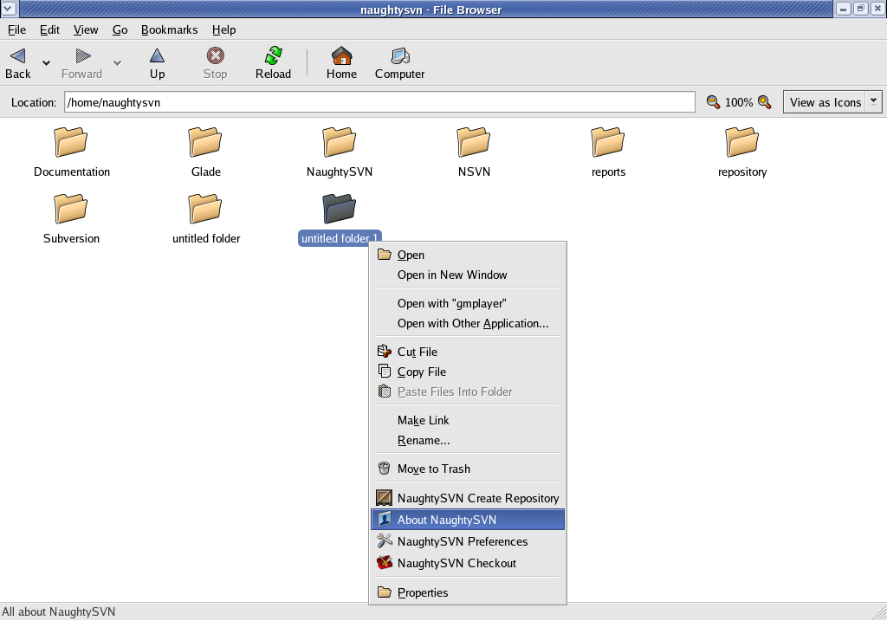
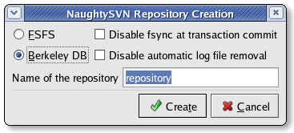
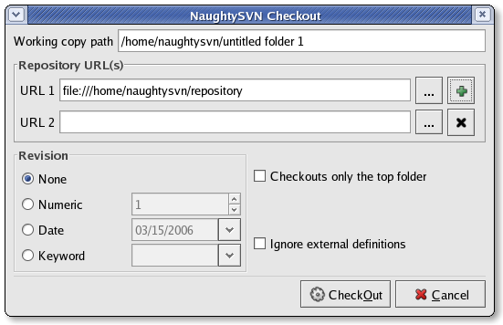
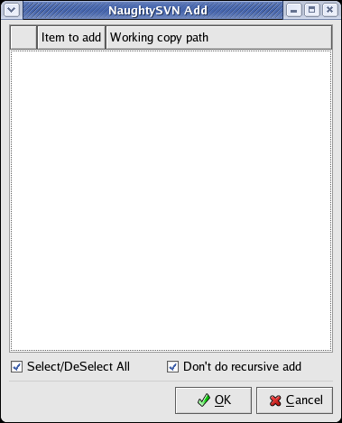
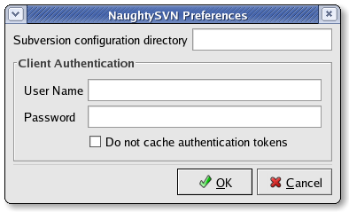

Here are some sample screenshots of NaughtySVN running on Fedora Core 4.
Shows context menu on right button click on a folder/file
Shows repository creation options.
Shows checkout dialog.
Shows dialog to add files/directory to one or more working copy path.
Options now avialble for customize NaughtySVN for a specific user.
